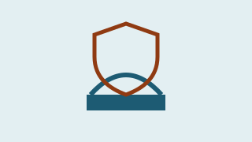
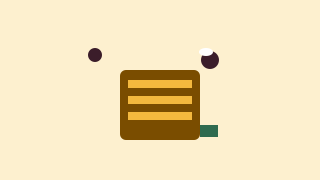
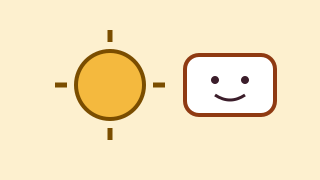
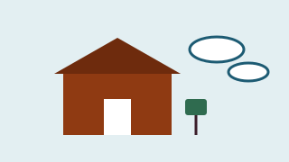

Protecting newborns from respiratory viruses
NeoVir group
Department of Public Health and Paediatric Sciences, University of Turin
In progress · 5 days left (ends )
€6,720 raised of €8,000 (84%) · 188 supporters
University of Turin · 2026 edition
ideaBlume is the crowdfunding site for research projects at the University of Turin: choose a project, donate even a few euros and follow the results. The site is run by the University's ideaBlume Office. About us and how we work
See ongoing projects How it works
Featured project

NeoVir group
Department of Public Health and Paediatric Sciences, University of Turin
In progress · 5 days left (ends )
€6,720 raised of €8,000 (84%) · 188 supporters
NeoVir group
Department of Public Health and Paediatric Sciences, University of Turin
In progress · 5 days left (ends )
€6,720 raised of €8,000 (84%) · 188 supporters

ApiLab group
Department of Veterinary Sciences, University of Turin
Goal reached · you can still support it for 20 days (ends )
€7,800 raised of €6,000 (130%) · 142 supporters

EcoMente group
Department of Psychology, University of Turin
In progress · 26 days left (ends )
€4,575 raised of €7,500 (61%) · 131 supporters

Aria Aperta group
Department of Computer Science, University of Turin
In progress · 33 days left (ends )
€2,350 raised of €5,000 (47%) · 79 supporters
Each project tells you who proposes it, what the money is for and how far it is from its goal.
From €5 upwards, with a reward or as a free donation. No need to register.
This applies to projects in the University programme. If the goal is not reached, we return your donation: this is the all-or-nothing rule.
Calculated from project data on 11 Nov 2026. 1499 supporters.
Healthy hives ·
Thank you! We passed €6,000. The University will match this amount when the campaign closes. Donations from now on go to the second goal: €9,000 for two more apiaries. These donations are not matched.
Newborns and viruses ·
We are €1,280 from the goal. Remember the all-or-nothing rule: if we do not reach it, donations are returned. If we do, the University adds €8,000.
Climate and wellbeing ·
Thirty students tried the app and helped us simplify the questions.
Researchers at the University of Turin can apply to the University programme with a project. Associations, schools and local organisations can propose a partnership with a research group.